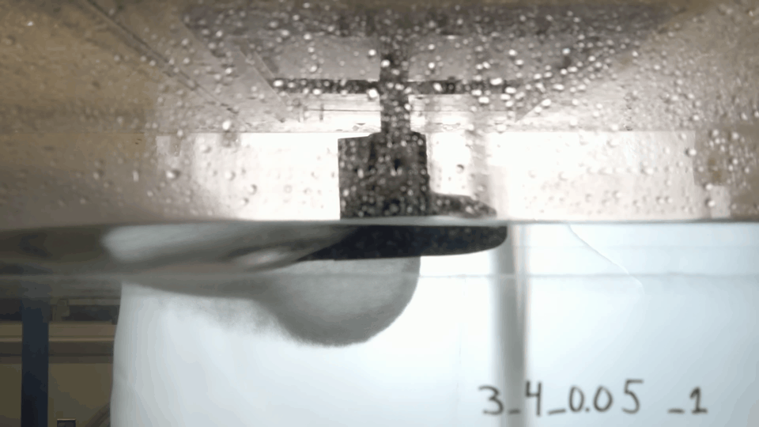
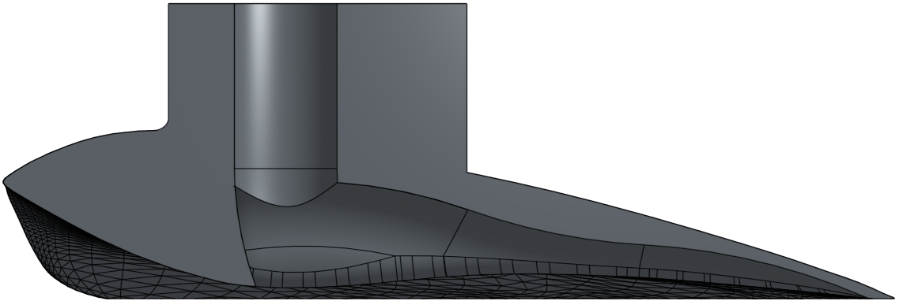

STOL Hoverfoil Design & CFD Optimization
Redesigning a hydrofoil using CFD and historical experimental data to improve lift and drag performance.

Project Overview
This research investigates the design of a hydrofoil utilizing underwing air injection to improve lift and drag performance during low-speed operation.
The project builds upon experimental data collected from two previous hydrofoil designs. These previous designs were physically tested in a water tunnel, providing experimental lift and drag data that can be used as a baseline for evaluating new designs.
My current work focuses on redesigning the foil geometry and evaluating the new design using CFD. The objective is to develop a geometry that improves performance relative to the previous models before moving to physical fabrication and testing.
Previous Experimental Testing
Earlier hydrofoil designs were tested experimentally in a water tunnel under a range of operating conditions. The resulting data provides a reference for evaluating whether subsequent designs produce improved lift and drag characteristics.
The images below show previous-generation hydrofoils and are included as background for the experimental data being used in the current project.


New Foil Design
Using the previous experimental results as a baseline, I designed a new foil geometry intended to improve overall lift and drag performance. The geometry is currently being refined as CFD results are collected and compared across operating conditions.

CFD Analysis
STAR-CCM+ is being used to simulate the new geometry and evaluate its performance before physical testing. The simulations allow the lift and drag behavior of the design to be studied while also providing visualization of the flow around the foil.
CFD results will be compared with the historical experimental data to determine how the new geometry performs relative to the previous designs and to guide additional design changes.
Current Project Status
✓ Historical experimental data collected for comparison
✓ New foil geometry designed
✓ CFD modeling and simulation underway
○ Physical model fabrication
○ Water-tunnel validation
The project is currently in the design and CFD analysis phase. Physical testing of the new foil has not yet been completed.